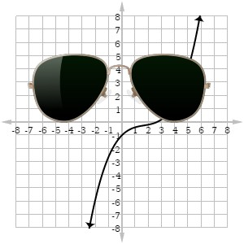

Lab 8: Anon Functions and Callbacks
In this lab, I worked with my partner to experiment with anonymous functions and callbacks.
Challenges
We found this lab to be pretty straight forward once we got started. Once again, an issue we ran into was small syntax errors, like the ommision of a semi-colon or something of the same caliber. When all of those blips and reference errors were sorted, things ran smoothly.
Results
Check the console for properly functioning anon functions + callbacks!